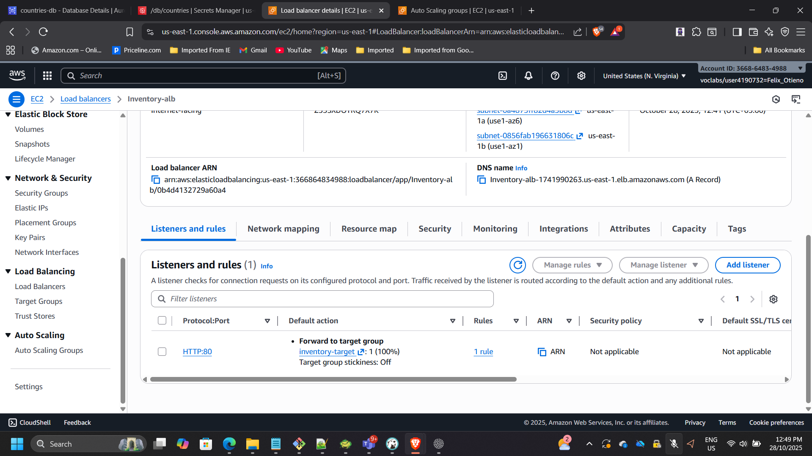
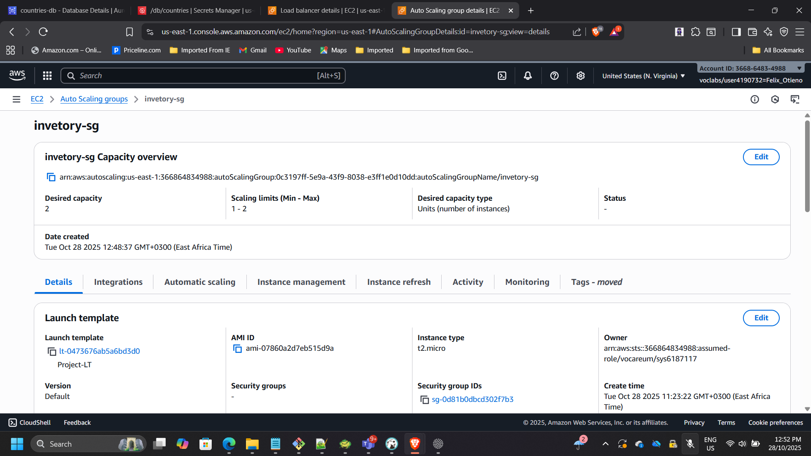
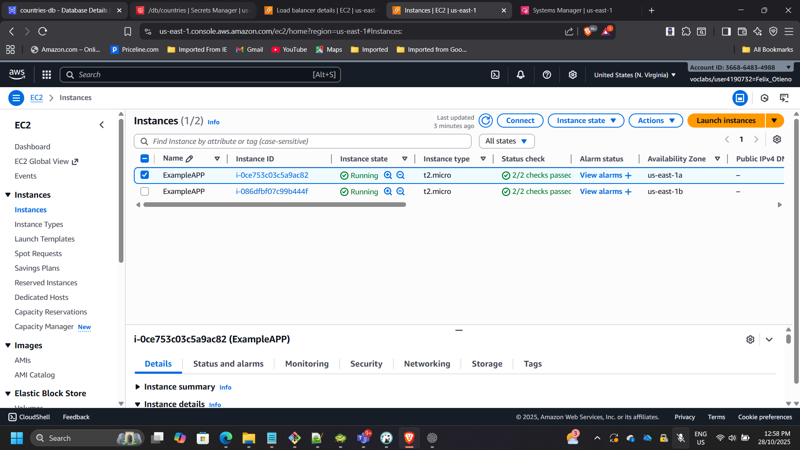
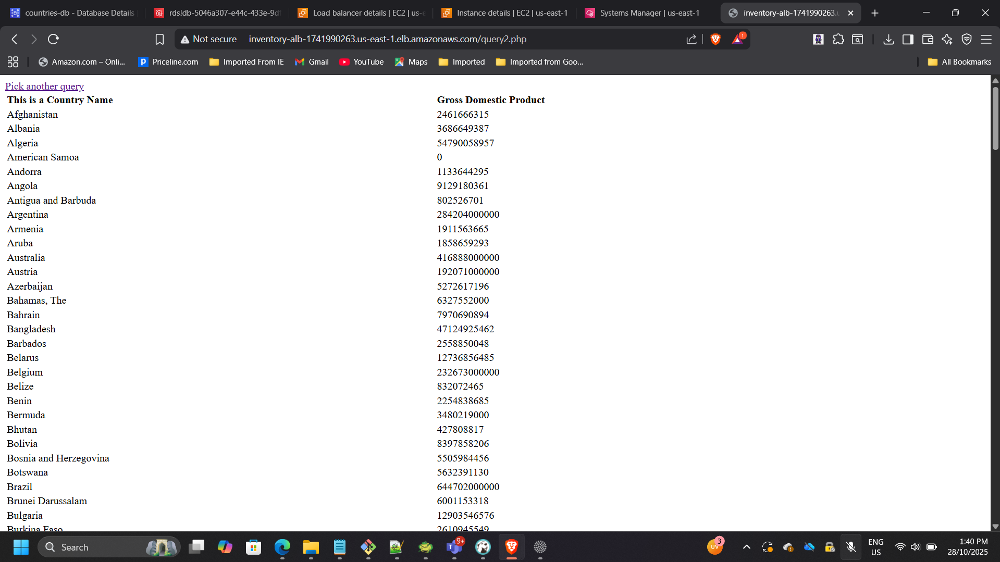
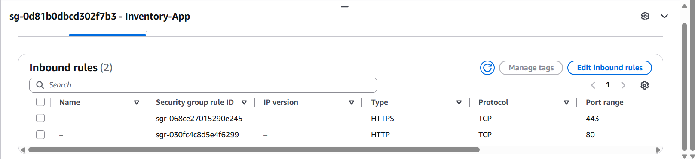
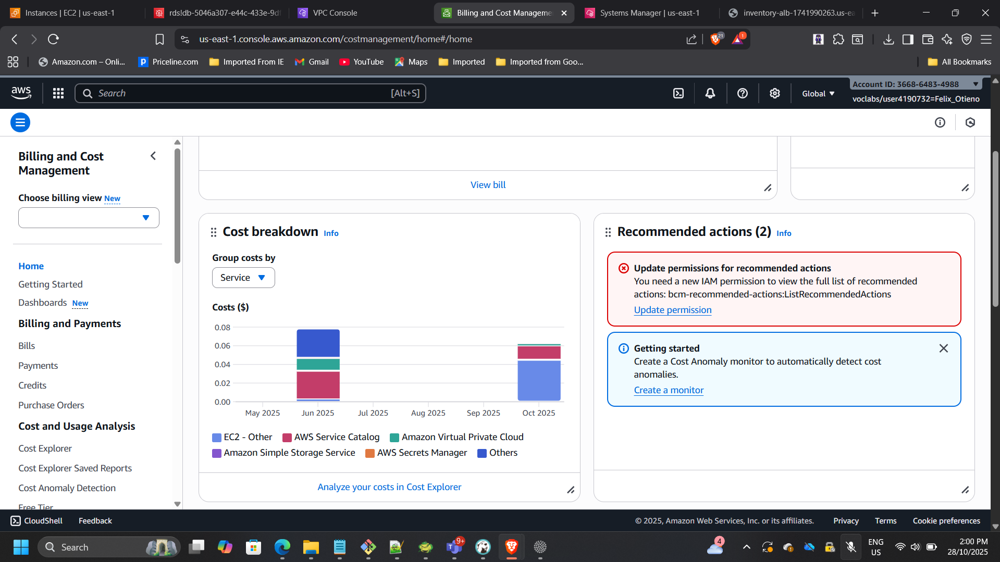

Modernizing a Legacy Web Application into an Enterprise-Grade AWS Architecture
Project: Enterprise Application Modernization on AWS
Timeline: October 2025
Role: Solutions Architect (Architecture Design & Implementation)
Skills: Amazon EC2, Amazon RDS (MySQL), Application Load Balancer, Auto Scaling, AWS Secrets Manager, IAM, VPC Architecture, AWS Systems Manager, AWS Well-Architected Framework
Executive Summary
Led the modernization of a legacy single-instance web application into a secure, scalable, and highly available multi-tier architecture on AWS. The original deployment lacked elasticity, resilience, and enterprise-grade security controls.
The redesigned architecture introduces:
- Multi-AZ high availability
- Private application and database tiers
- Elastic scaling via Auto Scaling Groups
- Managed relational database using Amazon RDS
- Secure secret management with AWS Secrets Manager
- Role-based access control via IAM
- Elimination of SSH in favor of Systems Manager
The resulting solution aligns with AWS Well-Architected principles and reflects patterns commonly adopted during enterprise cloud transformation initiatives.
Business Context
The original application operated on a single EC2 instance with locally stored credentials and a directly accessible database configuration. This architecture presented several enterprise risks:
- Single point of failure
- Manual scaling limitations
- Tight coupling between application and infrastructure
- Security exposure through static credentials
- Limited disaster recovery capabilities
The objective of the modernization initiative was to redesign the platform to meet enterprise-grade requirements for:
- High availability across Availability Zones
- Secure credential management
- Network isolation and tier segmentation
- Elastic scalability under variable load
- Operational governance aligned with AWS Well-Architected principles
The transformation focused on replacing fragile infrastructure patterns with managed services and automated resilience mechanisms.
Architecture Overview
The solution is structured into distinct tiers with strict network isolation:
- Presentation Tier
- Internet-facing Application Load Balancer deployed across two public subnets
- Application Tier
- Stateless PHP application running on EC2 instances in private subnets
- Managed by an Auto Scaling Group across multiple Availability Zones
- Database Tier
- Amazon RDS MySQL deployed in private subnets
- No public exposure, accessible only from the application tier
- Security & Access
- AWS Secrets Manager for database credentials
- IAM role-based permissions for secret retrieval
- AWS Systems Manager Session Manager for administrative access (no SSH)

Architecture Decisions & Design Rationale
1. Multi-Tier Network Segmentation
The architecture was redesigned into distinct tiers:
- Public subnets for the Application Load Balancer
- Private subnets for application instances
- Isolated private database subnets for Amazon RDS
This enforces strict east-west and north-south traffic control while eliminating direct database exposure to the internet.
2. Managed Database Adoption (Amazon RDS)
Instead of hosting MySQL on EC2, the solution leverages Amazon RDS to:
- Reduce operational overhead (patching, backups, maintenance)
- Improve reliability through managed service guarantees
- Support scalability and future Multi-AZ expansion
- Strengthen backup and recovery posture
This aligns with enterprise cloud migration best practices favoring managed services over self-managed infrastructure.
3. Elastic Compute with Auto Scaling
Application servers were deployed using a launch template and Auto Scaling Group across multiple Availability Zones.
Design considerations included:
- Stateless application design
- Health check integration with ALB
- Target tracking scaling policy (50% CPU utilization)
This ensures horizontal scalability and automatic recovery during instance-level failure events.
4. Secure Credential Management via AWS Secrets Manager
Hardcoded database credentials were eliminated and replaced with AWS Secrets Manager.
Security improvements include:
- Centralized secret storage
- IAM role-based access from EC2
- No credential exposure in application code
- Simplified credential rotation capability
This significantly reduces credential leakage risk and aligns with enterprise security compliance standards.
5. Administrative Access via Systems Manager
Traditional SSH access was replaced with AWS Systems Manager Session Manager.
Benefits:
- No open inbound SSH ports
- Reduced attack surface
- Centralized access control via IAM
- Improved auditability through AWS logging
This demonstrates security-first operational design.
6. Cost-Aware Architecture
While improving resilience, cost controls were implemented:
- Right-sized compute instances
- No NAT Gateway (to avoid unnecessary baseline cost)
- Controlled scaling thresholds
- Budget monitoring through AWS Budgets
The architecture balances enterprise resilience with financial governance.
Implementation Highlights
1. Deployed Amazon RDS MySQL
- Created RDS instance:
countries-db - Placed in private subnets using an existing DB subnet group
- Disabled public access
- Restricted inbound 3306 access to application security group only
- Created database:
countries
Stored credentials securely in AWS Secrets Manager:
- Secret name:
/db/countries - Contains: username, password, engine, host, dbname, port


2. Configured Application Load Balancer
- Internet-facing ALB across two public subnets
- Listener: HTTP (80)
- Target group health check path:
/index.php - Attached ALB target group to the Auto Scaling Group

3. Launch Template and Auto Scaling Group
Launch template included application files and SQL dump.
User data bootstrap script:
#!/bin/bash
yum install -y httpd php php-mysqli
systemctl enable httpd
systemctl start httpd
Auto Scaling Group configuration:
- Private subnets across two Availability Zones
- Desired capacity: 2 instances
- Target tracking policy: 50% CPU utilization
- Instances registered behind the ALB target group


4. Data Migration into RDS
Connected to one application instance using Systems Manager Session Manager.
Retrieved credentials securely:
aws secretsmanager get-secret-value --secret-id /db/countries --query SecretString --output text
Imported SQL dataset:
mysql -h <RDS-endpoint> -u admin -p countries < /home/ec2-user/countries.sql
Verified tables:
mysql -h <RDS-endpoint> -u admin -p -e "USE countries; SHOW TABLES;"

5. Functional and Resilience Testing
- Accessed the application using the ALB DNS name
- Verified PHP application loads successfully
- Confirmed database queries return expected results
- Simulated CPU load to validate Auto Scaling behavior
- Stopped one instance to confirm traffic failover via ALB health checks
- Confirmed direct access to RDS is denied from outside the application tier


Security & Compliance Controls
- Network isolation: EC2 and RDS in private subnets
- Least privilege: RDS accessible only from app security group
- Credential management: Secrets stored in AWS Secrets Manager (not in code)
- IAM role: EC2 granted only required permissions (e.g.,
secretsmanager:GetSecretValue) - Administrative access: Systems Manager Session Manager replaces SSH
- Security groups enforce strict tier communication

Cost & Efficiency Considerations
- Right-sized compute instances (t2.micro / t3.micro)
- Avoided NAT Gateway to reduce baseline networking cost
- Stopped non-production resources when idle
- Monitored usage via AWS Budgets

Outcome & Impact
- Transformed a legacy single-instance deployment into a resilient, enterprise-grade AWS architecture.
- Achieved high availability across Availability Zones with load balancing and Auto Scaling.
- Strengthened security posture using private subnets, Secrets Manager, IAM least privilege, and SSM access.
- Improved operational reliability through health checks and automated recovery.
- Delivered a repeatable modernization pattern aligned with AWS Well-Architected principles.